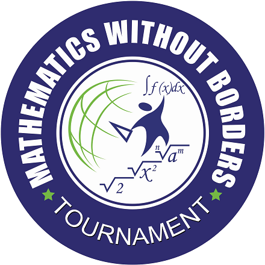

Математика без граници (МБГ)
Турнирът се организира от фондация „Математика без граници“ и „ИнвариантМ“ ЕООД.
- Регламент тук
- Състезанието се провежда в:
- 3 дистанционни кръга, които се осъществяват от училищата партньори (есен: 18-31.10.2024 г., зима: 23.01-10.02.2025 г., пролет: 20-31.03.2025 г.)
- Полуфинал: 04-05.2025 г. в Стара Загора
- Финал: 28.06-01.07.2025 г. в гр. Несебър. - Връзка към официалния сайт на организатора тук